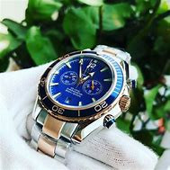

SIÊU THỊ TRỰC TUYẾN

|
Quần áo : Những bộ quần áo mùa hè đẹp nhất, giá rẻ nhất |
|
|  |
Đông Hồ Nam : Đồng hồ không chỉ là dụng cụ để xem thời gian mà đồng hồ còn là một món đồ trang sức. Ngày nay, vai trò “trang sức” của đồng hồ càng được nhấn mạnh. Thậm chí đồng hồ chính là món trang sức thể hiện được rõ nét nhất cá tính của người mang nó. Bộ sưu tập đồng hồ thời trang trẻ sau đây là một minh chứng. |

|
Trà Sữa: Trà sữa từ lâu đã trở thành một thức uống thân thuộc của tuổi học trò Việt Nam. Ngoài hương vị hấp dẫn, thức uống này còn mang trong mình một câu chuyện thú vị về lịch sử phát triển. |

|
Đùi Gà: Đùi gà tẩm bột xù là một sản phẩm thơm ngon chất lượng trong giới ăn vặt nói chung và các nhà hàng quán ăn nói riêng. Nói như vậy bởi vì Đùi gà rán có thể chinh phục tất cả các lĩnh vực cảu giới ăn uống và độ tuổi từ già đến trẻ cũng như mọi thành phần trong xã hội đều thích sản phẩm Đùi gà rán này. |